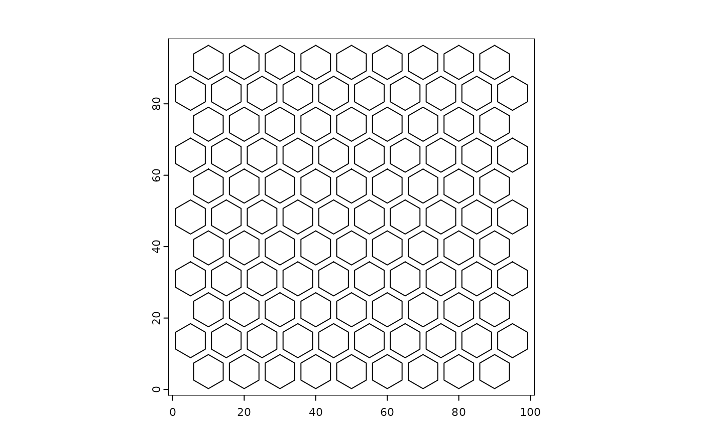
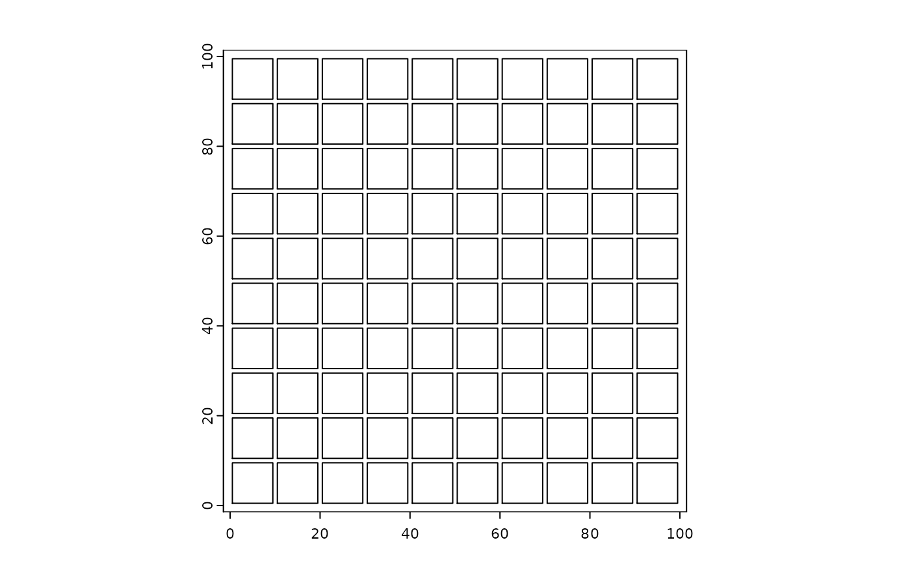

Tessellated grid of polygons
tessellate.RdGenerates a tessellated grid of polygons within the provided spatial extent
Usage
tessellate(
extent,
shape = c("hexagon", "square"),
shape_size = NULL,
gap = 0,
radius = NULL,
id_prefix = "ID_",
name = "grid"
)Arguments
- extent
SpatExtent or anything else a SpatExtent can be extracted or created from
- shape
Shape of the tessellation grid. Available options are "hexagon" and "square".
- shape_size
numeric. Size of shape to tessellate. (x-axis width for hexagons, side length for squares)
- gap
numeric. Shrink polygons to add a gap between tessellated polygons
- radius
deprecated. numeric. Radius size of the tessellation grid.
- id_prefix
character. prefix to add to poly_ID names generated
- name
name of giottoPolygons grid to make
Details
This function generates a tessellated grid of spatial locations based on the input spatial locations. The shape of the tessellation grid can be either hexagonal or square. The shape_size parameter determines the size of the grid cells or the bin size.
Examples
# Create an extent across which to generate tessellated polygons
e <- ext(0, 100, 0, 100)
# produce hexagons with a diameter of 10
x <- tessellate(extent = e, shape = "hexagon", shape_size = 10)
#> 104 polygons generated
plot(x)
# same size grid, but now with a gap
x <- tessellate(extent = e, shape = "hexagon", shape_size = 10, gap = 1)
#> 104 polygons generated
plot(x)

# square grid with a gap
x <- tessellate(extent = e, shape = "square", shape_size = 10, gap = 1)
#> 100 polygons generated
plot(x)
